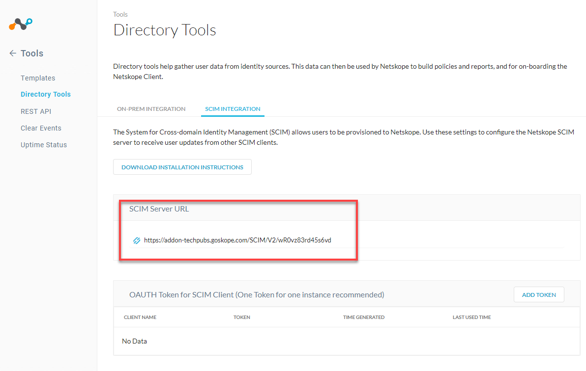
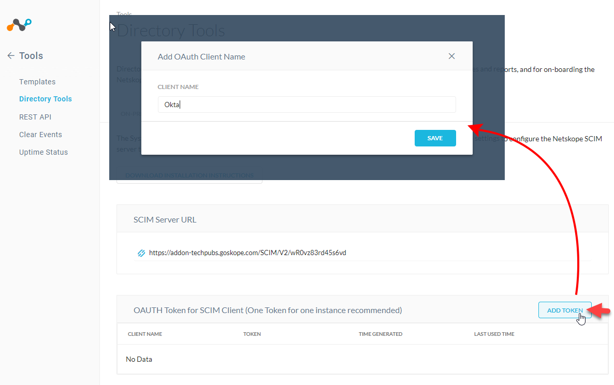
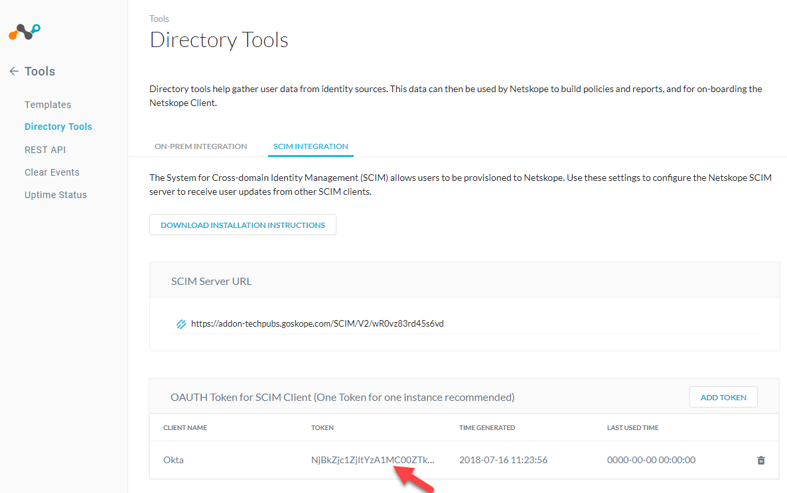
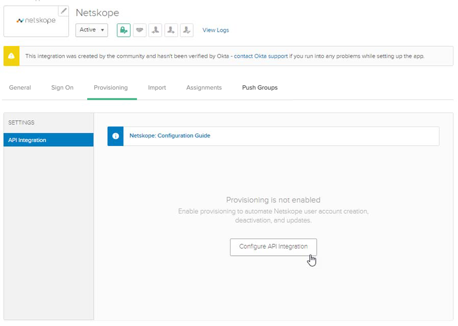
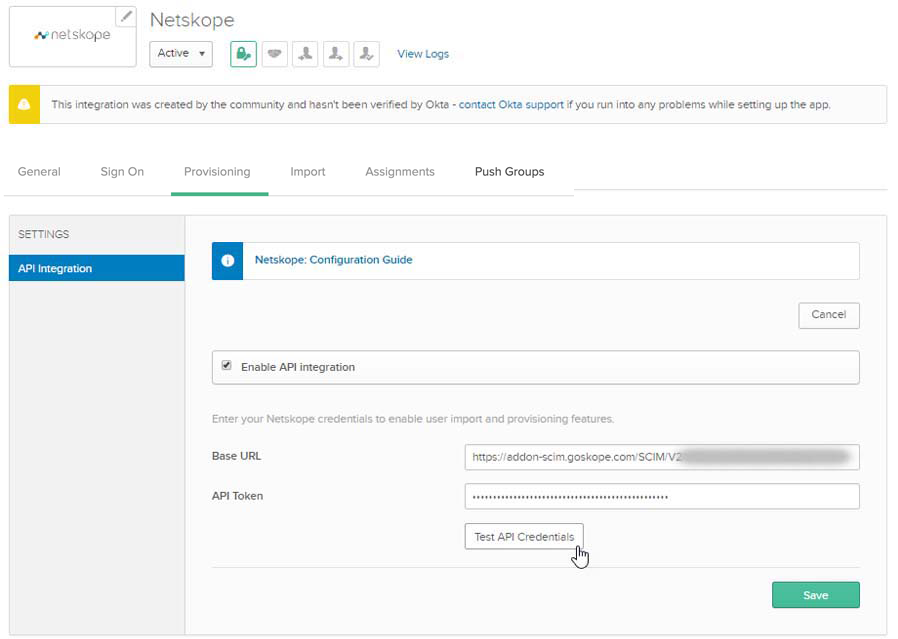
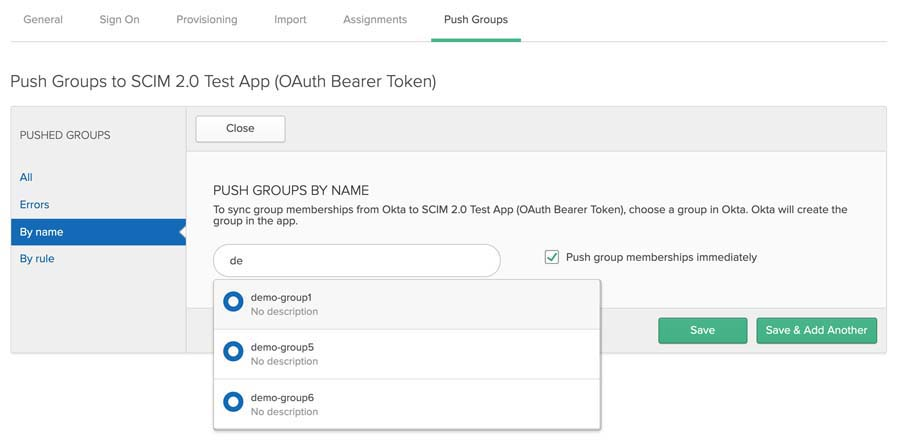
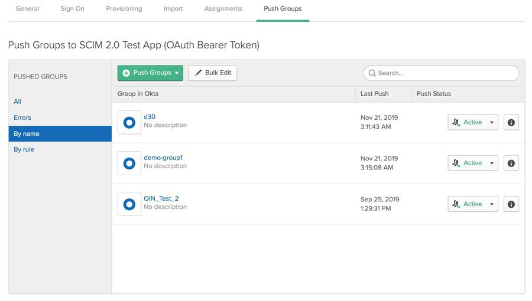
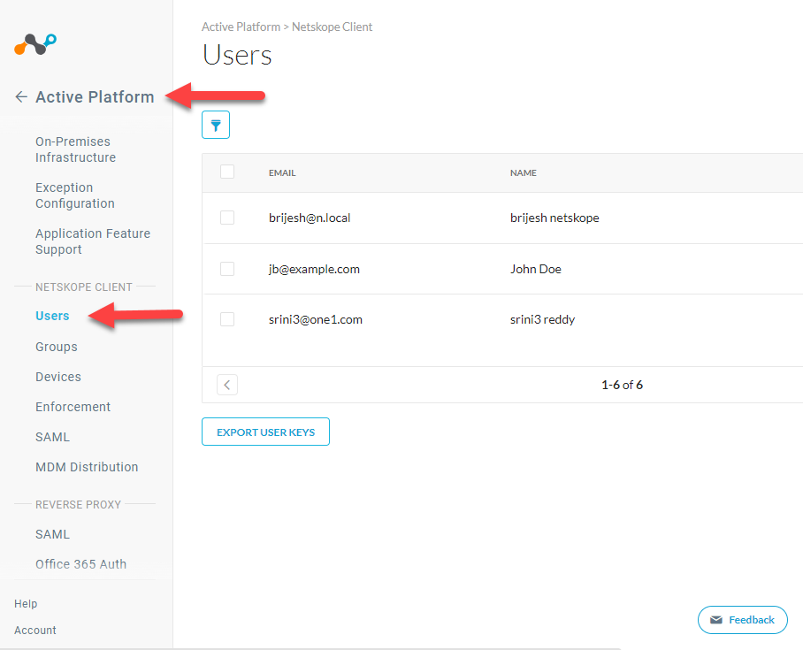

User and User Groups Provisioning with Okta
Netskope SCIM app allows you to easily provision users and user groups using Okta. Netskope supports the following provisioning features:
Push New Users and User Groups
When a user or user group is created in Okta or a new user or user group is created in AD and uploaded to Okta, the user is automatically provisioned in the Netskope tenant.
Push User Deactivation
When a user existing in Okta and provisioned in the Netskope tenant is deactivated by Okta, the user is deactivated in Netskope tenant as well.
Reactivate user
A user in the Netskope tenant and identified by the same user-id in Okta or a user that was created and provisioned in the Netskope tenant by Okta is activated, the user is reactivated in Netskope tenant.
Note
Netskope supports only SCIM 2.0 protocol
After a user is provisioned, any changes (edits) made to the users' username and email-address will not be reflected in the tenant.
Ensure that you have provisioned all users before pushing the respective user group.
This document provides details and instructions on how you can quickly integrate with Okta to provision users in Netskope cloud. To integrate Okta to the Netskope cloud, you will need:
An admin account with access to the Okta admin console.
Create a SCIM 2.0 app in the Okta admin console
Configure Netskope SCIM app with sign-on and user-attribute options
Assign users to the Netskope SCIM app.
Prerequisites
Okta admin account with console access.
SCIM Server URL and OAuth Token: This is required to establish connection between your Okta account and Netskope cloud.
Items
How to Get them
SCIM Server URL
Login to your Netskope cloud account and go to Settings > Tools > Directory Tools.
In the Directory Tools page, select SCIM Integration tab to get the SCIM Server URL.
OAuth Token
Login to your Netskope cloud account and go to Settings > Tools > Directory Tools.
In the Directory Tools page, select SCIM Integration tab to create OAUTH tokens for all your vendors.
Note
While it is possible to use a single token with all vendors, we recommend that you create individual tokens per vendor.
Click the Add Token button and enter a name to identify the token in the pop-up box. Then click the SAVE button to generate a token.
The generated token is listed as shown below.
To copy the token into the clipboard, click on the token string and then in the pop-up box, double click on the token.

To watch a video about Okta user provisioning, click play:
Creating Netskope App in Okta
The first step towards integrating Okta with Netskope is to create and configure Netskope app as a SCIM application in the Okta account.
Log in to your Okta account admin console.

In the admin console, select Applications and click the Add application button.

Now, search for Netskope in the search box and click Add to select Netskope

Configuring Netskope SCIM App
In the app’s General Settings page, give a name to the app, and specify the sub-domain of your company's tenant URL and click Next to continue.

In the Sign-on options page, select Secure Web Authentication and then select User sets username and password. In the same page, select Application username format as Okta Username and enable Password reveal option.

In the Provisioning tab of the App settings, click the Configure API Integration button.
Enter the SCIM URL and the OAUTH Tokens (refer to the steps defined at the beginning of this doc for details) and click the Test API Credentials button to verify connection between Okta and Netskope Cloud.
Click SAVE after the API credentials are verified and proceed to configure user attributes in the provisioning tab.
In the Provisioning tab, select To App from the left-hand-side options, and click Edit button for Provisioning to App. Enable the following:
Create Users
Update User Attributes
Deactivate Users

Click SAVE.
Add / Assign User and User Group to the Netskope App
In the Assignments tab, click Assign and select Assign to People.

Select the user to be assigned and click the Assign button.

To push groups, click the Push Groups tab.
Click Find Groups by Name button.

Search for the group to be added to the app and click the SAVE button
Note
Ensure that all users of the group are already added to the app.
Once added successfully, the user group will display Active status.

Verification
To verify if the users are provisioned in Netskope cloud from Okta, do the following:
Log in to your Netskope cloud account.
Go to Settings > Active Platform > Users to view the list of users assigned to the Netskope SCIM app.
